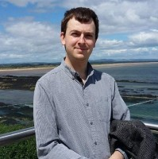

|  |
Dr Terence Robert Giles
Test and Quality Engineer.
I am an experienced Test and verification Engineer from an applied physics background with a demonstrated history of working within Scientific Research and Instrumentation and other
electro-mechanical manufacturing industries. I have developed skills in Data Analysis, Complete Systems Testing and Verification, Management, Training and a wide and
varied range of specialist software packages. I completed my PhD at Royal Holloway, University of London in
Experimental Condensed Matter Physics, focusing on High Pressure-Low Temperature Physics to investigate the interaction between physical and crystal structure
properties of novel magnetic materials. |